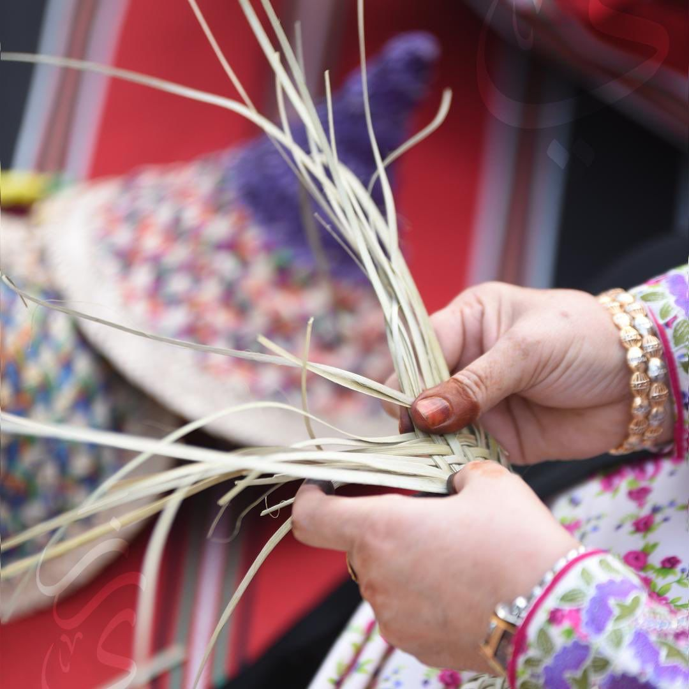
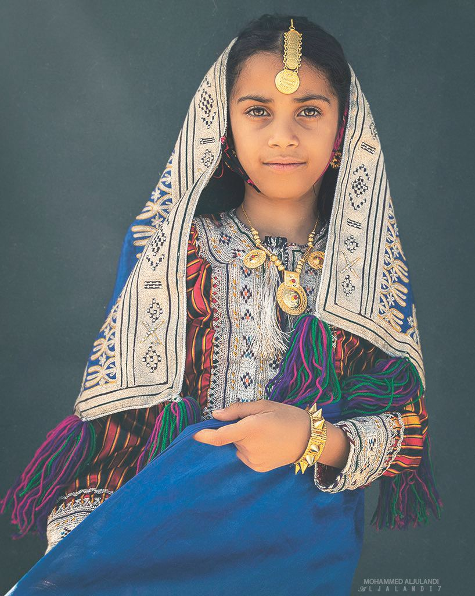
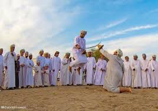
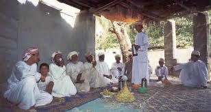

تشتهر ولاية جعلان بحرفها اليدوية التقليدية مثل النسيج، صناعة الفخار، وصناعة السيوف العمانية التي تحمل رموزًا تراثية عميقة. الحرفيون في جعلان يستخدمون طرقًا تقليدية توارثوها عبر الأجيال، مما يحافظ على الطابع الأصيل لهذه الفنون.
الحرف اليدوية مثل الفخار والسيوف العمانية تعكس هوية الولاية وتراثها العريق.
الأزياء التقليدية في ولاية جعلان تحمل تفاصيل غنية تعكس التراث العماني، مع استخدام التطريز اليدوي بألوان زاهية. النساء في جعلان يرتدين الثياب المطرزة بشكل دقيق، بينما يتميز الرجال بالزي العماني المزين بالخنجر التقليدي.
أزياء نسائية ورجالية تقليدية تُبرز الجمال والأصالة في تصاميمها.
تشكل الموسيقى والفنون التقليدية جزءًا هامًا من تراث ولاية جعلان. من أبرز الفنون الشعبية في المنطقة فن الرزحة الذي يُؤدى خلال المناسبات الوطنية والأفراح، وهو يعبر عن الشجاعة والتكاتف الاجتماعي.
فن الرزحة في ولاية جعلان يعكس الروح الجماعية والتراث الثقافي العريق.
تتميز ولاية جعلان بعاداتها الاجتماعية التي ترتبط بالمناسبات المختلفة. من أبرز هذه التقاليد هو استقبال الضيوف بحفاوة وتقديم القهوة العمانية والتمور، إلى جانب تنظيم المجالس التي تعد مركزًا للتواصل الاجتماعي والثقافي.
المجالس في جعلان تجمع السكان لمناقشة القضايا وتبادل الحكايات والموروثات.